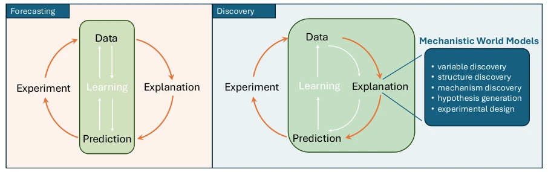

研究动机在于解决 AI 科学中"数据过剩但洞察匮乏"的困境。现有基础模型 [1, 2] 虽然预测准确，但本质是描述性的，无法揭示生成观测的潜在机制。科学发现需要可复用的解释性结构，而当前 ML 系统依赖数据规模 [8, 9]，在分布外泛化时脆弱，常依赖虚假相关性 [10]。例如，机制可解释性研究 [26, 27] 发现模型内部计算往往反映统计共表达而非因果路径 [43]，甚至物理世界模型 [45] 未能内化牛顿力学。因果表示学习 [48] 虽有理论保证但灵活性不足。因此，需要一种新范式，将知识组织围绕机制而非预测映射，实现从预测到解释的跨越。
—

Fig. 1 Mechanistic World Models (MWMs) shift AI from forecasting to discovery. Whereas conventional machine learning organises knowledge around predictive mappings, MWMs organise it around reusable mechanisms as the central compu- tational abstraction linking prediction and experimentation. This enables capabilities including variable, mechanism and structure discovery, explanatory hypothesis generation and experimental design, extending machine learning beyond accu- rate forecasting towards scientific understanding.
Fig. 2 Conceptual anatomy of a Mechanistic World Model. Observations are encoded into latent variables representing the state of a particular system. Reusable mechanisms, each comprising variable roles and a transformation, are instantiated by binding these roles to the learned variables. Different systems are explained through different structures that instantiate and compose a shared library of reusable mechanisms. Parsimony favours compact variables, simple mechanisms and sparse explanatory structures, while compositionality encourages the reuse and recombination of mechanisms across different systems through different explanatory structures.